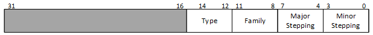
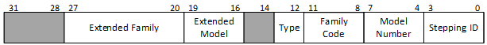
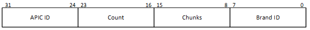

Изучение способов идентификации микропроцессоров, совместимых с архитектурой семейства Intel x86-64; получение практических навыков по разработке низкоуровневых программ, определяющих тип установленного центрального процессора.
Выполнение работы базируется на знании базовой архитектуры прикладного и системного уровней микропроцессоров семейства x86-64.
С целью получения практических навыков по разработке и выполнению программ, определяющих тип CPU, необходимо самостоятельно составить программу в соответствии с вариантом задания.
Следует знать, что не существует единственного универсального метода идентификации всех микропроцессоров архитектурного семейства x86-64. Поэтому для определения типа любого из процессоров указанного семейства необходимо совместное использование нескольких способов и средств.
Одним из простых способов идентификации является контроль за изменением разрядов в регистре флагов (E)FLAGS (приложение А). При этом используются следующие биты указанного регистра: ID, VIP и VIF, которые присутствуют в регистре флагов процессоров, начиная с процессора Pentium (P5); AC (i486); VM, RF (i386); NT, поле IOPL (i286).
Для идентификации 16-битных процессоров анализируют значение разрядов 12-15 регистра флагов после попыток его модификации:
Для идентификации 32-битных процессоров анализируется содержимое EFLAGS:
Для обращения к регистрам FLAGS и EFLAGS используются команды PUSHF/POPF и PUSHFD/POPFD, соответственно. Фрагмент программы, определяющей тип процессора 8086/8088 по регистру флагов приведен в примере 4.3.1.
BIOS может получить информацию о типе 32-разрядного процессора в виде сигнатуры идентификации, которая формируется в регистре EDX непосредственно после сигнала сброса процессора (рис. 4.1). Следует обратить внимание на некоторые отличия сигнатуры современных микропроцессоров от i386.

а)

б)
Рисунок 4.1 – Сигнатура идентификации процессора:
а) в регистре EDX процессора i386 после его сброса;
б) в регистре EAX процессоров i486+ после выполнения CPUID с EAX = 1
Поле "Extended family" (биты 20-27) используется совместно с "Family code" (биты 8-11) для обозначения принадлежности процессора семействам i386, i486, Pentium, Pentium Pro или Pentium 4. Семейство P6 включает все процессоры, основанные на микроархитектуре Pentium Pro, имеет значение поля "Extended family" равное 00h и значение поля "Family code" равное 06h. Семейство Pentium 4 включает все процессоры, основанные на микроархитектуре Intel NetBurst, имеет значение поля "Extended family" равное 00h, значение поля "Family code" равное 0Fh.
Поле "Extended model" (биты 16-19) используется совместно с полем "Model number" (биты 4-7) для обозначения модели процессора в рамках семейства.
Поле "Stepping ID" (биты 0-3) обозначает модификацию (ревизию) конкретной модели.
Поле "Type" (биты 12 и 13) может обозначать, что процессор является оригинальным OEM-процессором (00), OverDrive-процессором (01) или процессором, который может быть использован в двухпроцессорных системах (10).
Возможность получения сигнатуры процессора в любое время без необходимости сброса присутствует в процессорах, поддерживающих команду CPUID (см. 4.2.3). Такая поддержка была реализована, начиная с поздних версий процессоров i486.
Команда CPUID предоставляет программному обеспечению подробную информацию о процессоре, на котором она выполнена. Ее функция определяется содержимым регистра EAX в момент вызова. Все множество поддерживаемых функций разделено на два подмножества: функции первого и второго подмножеств возвращают, соответственно, базовую и расширенную информацию о процессоре.
В табл. 4.1 показаны входные и выходные параметры нескольких базовых функций команды CPUID.
Таблица 4.1 – Параметры команды CPUID
| Входной параметр | Выходной параметр |
|---|---|
| EAX = 0 | EAX = max – наивысшее значение входного параметра, воспринимаемое командой CPUID |
| EBX:EDX:ECX – строка идентификации производителя | |
| EAX = 1 | EAX – сигнатура идентификации процессора (рис. 4.1) |
| ECX:EDX – флаги свойств (таблицы Г.1, Г.2) | |
| EBX – дополнительная информация (рис. 4.2) | |
| EAX = 2 | EAX, EBX, ECX, EDX – параметры конфигурации процессора |
| . . . | . . . |
| EAX > max | EAX, EBX, ECX, EDX не определены (не используются) |
Для того, чтобы определить максимально допустимое значение входного параметра базовых функций команды CPUID, необходимо загрузить в регистр EAX значение 0, а затем выполнить команду CPUID:
После такого вызова команды CPUID регистр EAX будет содержать наивысшее значение входного параметра базовых функций. Кроме того, будет возвращена текстовая строка идентификации производителя ("Vendor ID"), состоящая из трех частей по четыре символа (в регистре EBX первые четыре ASCII-кода символа, в EDX – следующие, в ECX – последние).
Выполнение команды CPUID со значением EAX = 1 позволяет получить сигнатуру идентификации CPU, которая возвращается в регистре EAX.
Помимо сигнатуры, будет предоставлена также некоторая дополнительная информация в регистре EBX:

Рисунок 4.2 – Содержимое регистра EBX после выполнения команды CPUID с EAX = 1
Кроме того, в регистрах EDX и ECX будут расположены флаги свойств ("Feature flags", таблицы Г.1, Г.2). Единичные значения разрядов означают поддержку процессором соотвествующих свойств. Используя данную информацию, программное обеспечение может выявить и предотвратить возможные несовместимости с различными свойствами процессора, добавляемыми или удаляемыми производителями.
По аналогии с методом идентификации по регистру флагов процессор можно идентифицировать по выполнению команд, поддерживаемых им (или процессором выше). При выполнении этих команд на процессорах ниже предполагаемого возникает особый случай – недействительный код операции (прерывание 6). Используемые с указанной целью команды:
Идентифицировать процессор также возможно, выполнив на нем определенное количество команд и сравнив время их выполнения с табличным значением. При этом помимо типа процессора можно определить и его тактовую частоту. Однако данный способ не всегда дает верный тип процессора, который был «разогнан».
Для идентификации специфических процессоров 8086/88 фирмы NEC, различных DLC и SLC фирмы СYRIX и т.п. существуют определенные библиотеки программ, а также описания, предоставляемые производителями данных процессоров.
Выполнение работы состоит в разработке, отладке и выполнении ассемблерных программ для идентификации CPU в среде разработки Visual C++. Основные этапы работы в среде Visual C++ рассмотрены в лабораторной работе 2 (п. 2.4).
Отчет о лабораторной работе должен содержать:
В экспериментально-практической части необходимо привести исходные тексты разработанных программ (на языке C++ с ассемблерными вставками) и результаты их выполнения, полученные в регистрах CPU и (или) ячейках памяти.